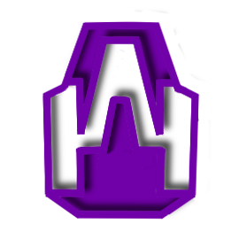

L'alliance entre Aloïs Barraud, Jaque Boulon et Nestor Babou ne s'est pas faite au grand jour. Les trois hommes se sont d'abord croisés sur un forum caché du réseau GFKnow. Ce repaire numérique a été développé par un individu en quête de la "vraie vérité", opérant sous le pseudonyme de RubyChop.
Ce n'est qu'après les événements tragiques de 2043 que les initiateurs se sont rencontrés physiquement. Cette réunion secrète s'est tenue à l'abri des regards, directement dans l'aquarium de BlouBloup Inc., l'entreprise dirigée par Nestor Babou.
Nestor Babou occupe une place particulière au sein du groupe. Il est le fils de Jean Babou, cofondateur de SkyMotors Company aux côtés de Gabriel Frouard. Malgré la fortune colossale de sa famille, Nestor est intimement persuadé que son père a été endoctriné par les idées sombres et les manipulations de Frouard. Sa participation est une tentative de nettoyer le nom de sa famille.
Le 2 Juin 2038, Aloïs Barraud est accusé d'avoir renversé le rugbyman Lucien Dubreuil dans l'une des voitures SkyMotors. Le réel conducteur était Gabriel Frouard, mais pour préserver sa société, il décida d'éliminer Aloïs Barraud et son projet de nouvelle voiture Médinor.
Aujourd'hui, le projet NorWédi détient la preuve ultime : Aloïs possède des photographies confidentielles de Gabriel Frouard se trouvant à l'hôpital aux côtés de Lucien.
Le 18 Mai 2042, Jaune Pastel disparait suite à un rendez-vous avec Gabriel Frouard. Les tensions entre SkyMotors et Jaque & Jaune Travel Group ont fait de Gabriel Frouard le suspect principal.
Récemment, le groupe a retrouvé la dernière lettre de Jaune Pastel, rédigée avant sa disparition. Il y décrit d'immenses pressions subies, évoque des projets occultes de Gabriel Frouard, et mentionne explicitement la tristement célèbre Ferme Big TC liée à l'Affaire Big TC.
Gabriel Frouard aurait volé et détourné de l'argent de la famille Babou. Pour compiler toutes ces preuves et tracer les déplacements ultra-sécurisés de Gabriel, le groupe a pu compter sur une aide inattendue. Bastien Gaillard, le milliardaire reclus, a exceptionnellement prêté sa base de données immense et ses serveurs surpuissants refroidis à l'azote liquide.
Ce n'est pas le hasard qui a mis Bastien Gaillard sur la route de NorWédi. C'est précisément via le forum clandestin de RubyChop, hébergé dans les couches profondes du réseau GFKnow, que Bastien a pris contact avec les membres du projet. Suivant depuis des années les activités de Gabriel Frouard avec une rancœur jamais éteinte depuis leur rupture sur The Insomniac Phantasy, il avait déjà rassemblé des données précieuses sur SkyMotors bien avant d'être sollicité. La convergence de ses intérêts personnels et des objectifs de NorWédi a rendu la collaboration naturelle.
| Date | Événement |
|---|---|
| 18 Mai 2042 | Disparition de Jaune Pastel. Les suspicions contre Frouard poussent les futurs membres de NorWédi à chercher des réponses. |
| 2043 | Rencontre physique fondatrice du Projet NorWédi dans l'aquarium de Nestor Babou : BloupBloup Inc. |
| 2044 | Analyse des données massives fournies par Bastien Gaillard. Découverte de la lettre de Jaune Pastel. |
| Début 2045 | Planification de l'assassinat. Recrutement des frères AXL et TIM. |
Pour réaliser l'impossible et éliminer le PDG le plus protégé du monde, NorWédi a fait appel à deux mercenaires fantômes : les frères AXL et TIM. Connus dans les milieux obscurs pour un assassinat retentissant, ces deux hommes étaient officiellement répertoriés comme étant enfermés depuis des années au terrible Goulag de Kazan (le même établissement qui accueillera plus tard Siola Duarrab). Leur extraction reste un mystère total.
La survie de Gabriel Frouard signifierait la mise en marche automatique des armes secrètes du Projet Médinor. Face à cet arsenal apocalyptique développé par Siola Duarrab, une seule force militaire serait capable d'intervenir.
L'humanité s'en remettrait alors à son tout dernier rempart : Cyrillac Fauveau, l'arme de guerre conditionnée par le gouvernement.